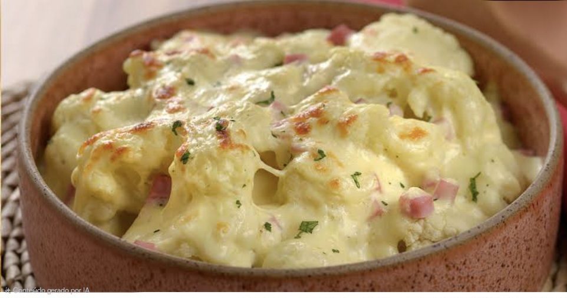
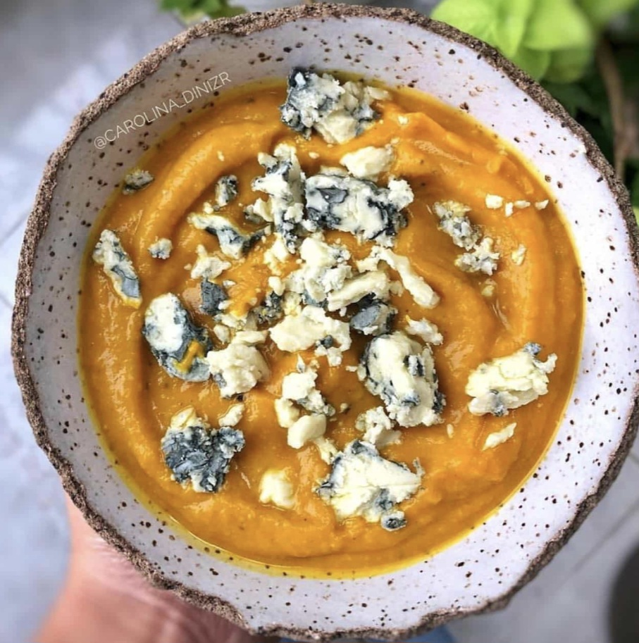
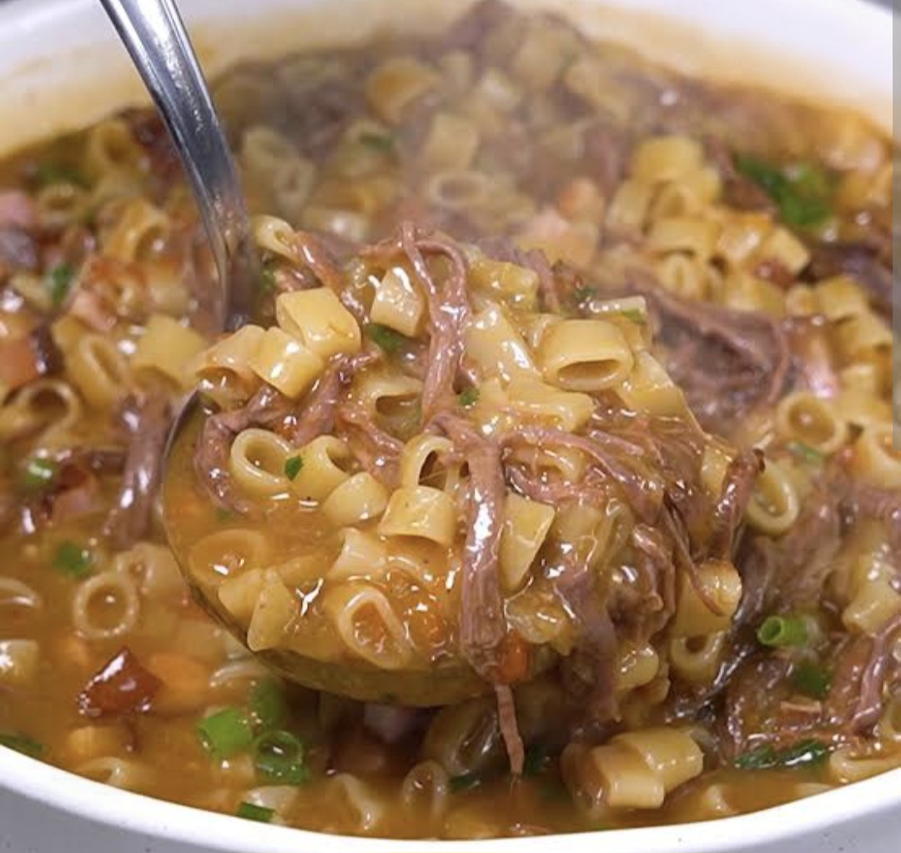
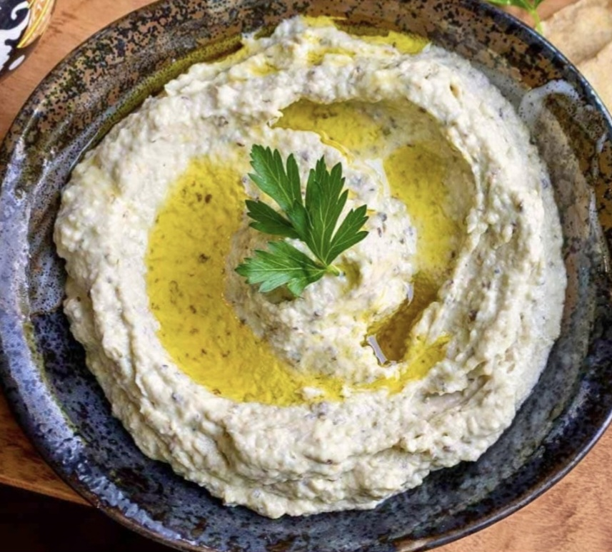
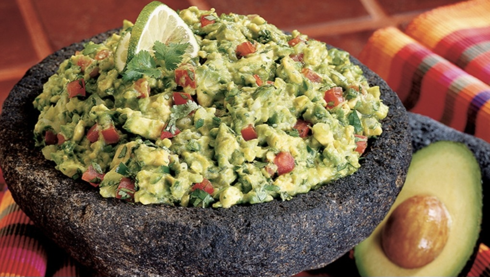
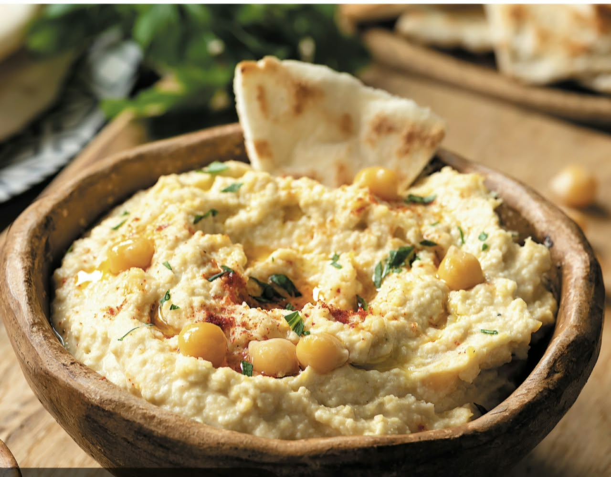
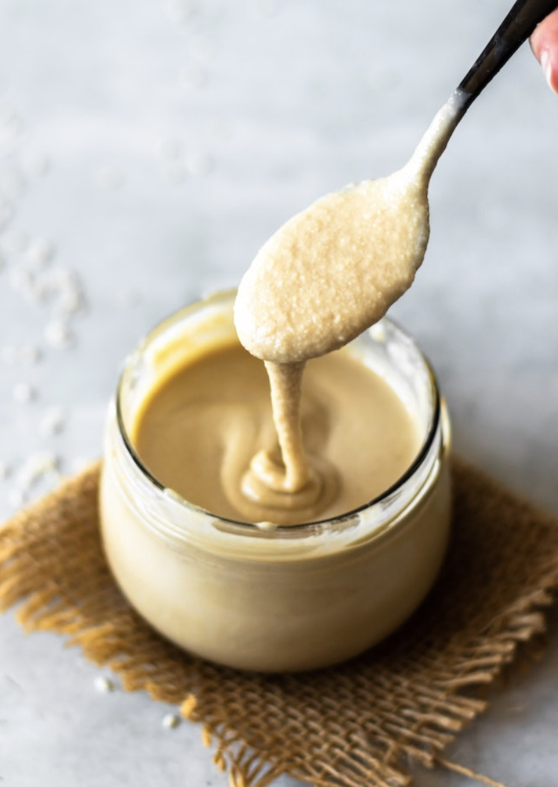
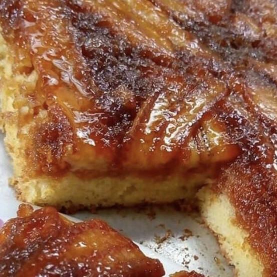
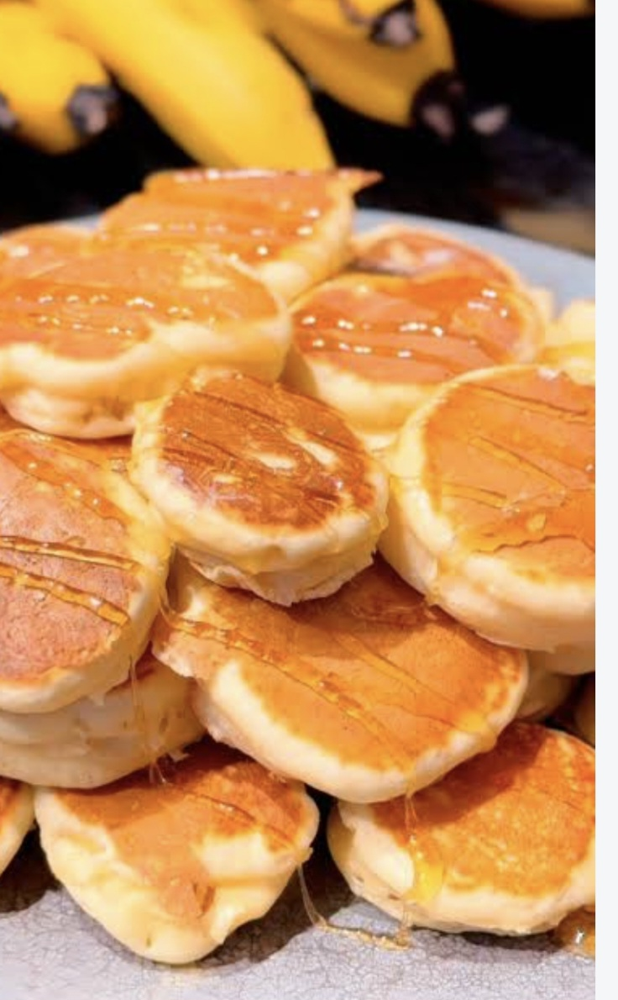
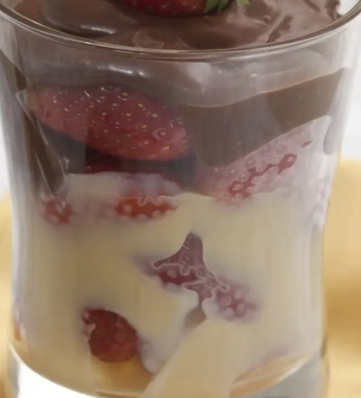

Receitas simples, práticas e cheias de sabor para facilitar o dia a dia. Aqui você encontra ideias para preparar uma comida gostosa sem complicação — escolha sua receita, coloque a mão na massa e aproveite!
Encontre uma receita
Salgados e refeições
Panqueca
Massas
Massa
1 ovo
1 xícara de farinha de trigo
1 xícara de leite
1 colher de sopa de óleo
1 pitada de sal
Modo de preparo
Bata todos os ingredientes no liquidificador. Faça as panquecas em uma frigideira antiaderente, formando camadas bem fininhas. Quando a massa começar a borbulhar, vire.
Sugestões de recheio
Salgados:
Carne moída
Frango
Queijo
Frango com queijo
Carne moída com queijo
Doces:
Banana com queijo
Doce de leite
Banana com doce de leite
Banana com queijo e doce de leite
Pode congelar?
Sim. Separe as panquecas com papel manteiga ou filme para não grudarem.
Crepioca
Massas
Ingredientes
1 ovo
2 colheres de sopa rasas de tapioca
Sal a gosto
Temperos
Modo de preparo
Bata tudo e faça na frigideira, como se fosse uma panqueca. Recheie a gosto.
Dica: pode colocar orégano ou pimenta na massa.
Sugestões de recheio
Frango desfiado com cenoura e requeijão light
Queijo, presunto e tomate
Carne moída com requeijão light
Creme de ricota temperada
Pão de Queijo Fake
Lanches
Ingredientes
1 ovo
2 colheres de sopa de tapioca
2 colheres de sopa de leite
1 colher de sopa de fermento em pó para bolo
1 pitada de sal
2 colheres de sopa de cream cheese (pode substituir por requeijão light ou creme de leite light, na mesma quantidade)
100 g de queijo
Rendimento: até 20 forminhas pequenas de cupcake.
Modo de preparo
Misture o ovo, a tapioca, o leite, o fermento, o sal e o cream cheese (ou a substituição escolhida).
Acrescente os 100 g de queijo e misture bem.
Coloque a massa em forminhas pequenas de cupcake.
Leve ao forno preaquecido por aproximadamente 20 minutos, ou até dourar.
Na airfryer
Pode fazer na airfryer no lugar do forno, usando metade do tempo: cerca de 10 minutos, ou até dourar.
Pode congelar?
Sim, depois de assado. Para comer, esquente no forno ou na airfryer.
Torta de Tapioca de Frango
Tortas
Massa
4 ovos
6 colheres de sopa de tapioca
1 colher de sopa de fermento em pó
1 pitada de sal
1 cenoura ralada
1 molho de cheiro-verde ou salsa
Recheio
500 g de frango desfiado
4 colheres de sopa de requeijão
1 tomate picado
100 g de palmito
Modo de preparo
Misture os ovos, a tapioca, o fermento, o sal, a cenoura ralada e o cheiro-verde até formar uma massa.
Coloque metade da massa em uma assadeira untada.
Distribua o recheio sobre a massa.
Cubra com o restante da massa.
Opcionalmente, coloque queijo parmesão por cima.
Leve ao forno preaquecido por aproximadamente 25 minutos, ou até dourar.
Na airfryer
Pode fazer na airfryer no lugar do forno, usando metade do tempo: cerca de 12 a 13 minutos, ou até dourar.
Pode congelar?
Sim, em porções. Esquente no forno antes de servir.
Torta de Frango com Couve-flor
Tortas

Ingredientes
1 couve-flor triturada crua
2 a 3 peitos de frango cozidos e desfiados
100 ml de creme de leite fresco
1 pote de requeijão
Cebola a gosto
Alho a gosto
Azeite a gosto
Parmesão ralado a gosto para gratinar
Modo de preparo
Refogue o frango desfiado com cebola, azeite e alho.
Acrescente a couve-flor triturada crua e refogue por alguns minutos.
Adicione o creme de leite fresco e o requeijão.
Misture bem e deixe ferver por aproximadamente 3 minutos, até ficar cremoso.
Transfira para um refratário.
Cubra com parmesão ralado.
Leve ao forno preaquecido a 180–200 °C por aproximadamente 30 a 40 minutos, ou até dourar e gratinar.
Dica
Se quiser uma torta mais firme, deixe a couve-flor bem sequinha depois de triturar, para não soltar muita água durante o preparo.
Na airfryer
Pode fazer na airfryer no lugar do forno, usando metade do tempo: cerca de 15 a 20 minutos, ou até dourar e gratinar.
Sopas
Creme de Abóbora com Gorgonzola
Sopas

Ingredientes
500 g de abóbora
6 dentes de alho
2 cebolas inteiras
Sal a gosto
2 colheres de sopa de requeijão light
1 colher de sopa de creme de leite (opcional)
150 g de queijo gorgonzola
Modo de preparo
Refogue a abóbora com o alho e as cebolas.
Tempere com sal a gosto.
Cubra as abóboras com água.
Deixe ferver por aproximadamente 20 minutos, ou até que as abóboras estejam bem macias e desmanchando.
Bata a abóbora cozida no liquidificador com o requeijão light e o creme de leite.
Volte o creme para a panela.
Acrescente o gorgonzola.
Deixe aquecer até ferver, mexendo para incorporar o queijo.
Reserve alguns pedaços de gorgonzola para colocar por cima.
Finalização
Coloque os pedaços de gorgonzola por cima na hora de servir.
Pode congelar?
Sim, mas pode separar um pouco. Ao reaquecer, mexa bem.
Sopa de Lagarto com Macarrão
Sopas

Ingredientes
1 kg de lagarto bem limpo (peça ao açougueiro para retirar a gordura)
1 cenoura
1 pimentão vermelho
1 pimentão amarelo
2 cebolas pequenas
1 cabeça de alho
4 batatas médias
1 colher de sopa de óleo
250 g de macarrão tipo sopa de letrinha
1 colher de sopa de páprica doce
1 colher de sopa de páprica defumada
1 pedaço de alho-poró
1 colher de chá de páprica picante (opcional)
Sal a gosto
Modo de preparo
Limpe bem o lagarto, retirando o excesso de gordura. Se possível, peça ao açougueiro para fazer essa parte.
Coloque 1 colher de sopa de óleo na panela de pressão.
Sele o lagarto dos dois lados, deixando a carne bem douradinha.
Acrescente a cenoura, os pimentões, as cebolas, o alho, as batatas e o alho-poró.
Tempere com a páprica doce, a páprica defumada e, se quiser, a páprica picante.
Coloque sal a gosto.
Cubra tudo com água.
Tampe a panela e deixe cozinhar por 1 hora na pressão.
Depois de cozinhar, retire o lagarto inteiro da panela.
Desfie a carne com um garfo.
Retire qualquer gordura que ainda tenha ficado na carne.
Em uma frigideira, dê uma última fritadinha na carne desfiada, para ficar mais saborosa.
Volte a carne para a panela.
Acrescente os 250 g de macarrão de letrinhas.
Cozinhe até o macarrão ficar no ponto.
Dica da Camilla
A graça dessa sopa é o lagarto ficar bem cozido e desfiado, mas depois receber aquela última fritadinha na frigideira antes de voltar para a sopa. Isso dá um sabor muito melhor à carne.
Pode congelar?
Sim, mas congele a sopa sem o macarrão, para ele não ficar mole demais ao descongelar. Ao reaquecer, cozinhe o macarrão na hora.
Pastas e entradas
Babaganoush
Entradas

Ingredientes
2 berinjelas
1 cabeça de alho
2 colheres de sopa de tahine
½ limão
2 colheres de sopa de azeite
1 pitada de sal
Modo de preparo
Coloque as berinjelas diretamente na chama do fogão para defumar, virando até ficarem bem murchas e com a casca queimada.
Coloque as berinjelas em uma assadeira e leve ao forno preaquecido por aproximadamente 15 minutos, até ficarem bem macias.
Envolva a cabeça de alho inteira, com casca, em papel-alumínio e leve ao forno por aproximadamente 10 minutos.
Corte as berinjelas ao meio e retire a polpa.
Coloque a polpa no processador junto com o alho assado, tahine, limão, azeite e sal.
Bata até formar uma pasta cremosa.
Leve à geladeira.
Na airfryer
Pode fazer na airfryer no lugar do forno, usando metade do tempo: berinjelas por cerca de 7 a 8 minutos e alho por cerca de 5 minutos.
Finalização
Coloque um fio de azeite por cima e salpique 1 colher de chá de páprica defumada. Sirva com pão.
Pode congelar?
Melhor na geladeira e por poucos dias. Até dá para congelar, mas a textura muda.
Guacamole da Camilla
Pastas

Ingredientes
2 avocados maduros ou 1 abacate maduro médio
½ limão
2 tomates sem sementes, picados
20 folhas de coentro, sem os talos
2 colheres de sopa cheias de azeite extravirgem
Sal a gosto
Pimenta, se quiser
Modo de preparo
Coloque os avocados (ou o abacate) em uma tigela.
Amasse com um garfo, deixando alguns pedacinhos para dar textura.
Acrescente o ½ limão.
Junte os tomates sem sementes picados.
Amasse ou misture o coentro e acrescente à preparação.
Tempere com sal e, se quiser, pimenta.
Finalize com as 2 colheres cheias de azeite extravirgem.
Misture tudo delicadamente.
Dica da Camilla para escolher o avocado
Quanto mais molinho e menos escuro (preto) estiver o avocado, melhor.
Hummus com Tahine
Pastas

Ingredientes
500 g de grão-de-bico cozido (de lata)
1 cabeça de alho
2 colheres de sopa de tahine
4 colheres de sopa de azeite extravirgem
1 pitada de sal
Suco de ½ limão
100 ml da água da lata ou água filtrada
Modo de preparo
Escorra o grão-de-bico, mas guarde a água da lata.
Coloque o grão-de-bico no processador.
Acrescente o tahine, o azeite, o sal, o limão e o alho assado.
Bata tudo e vá acrescentando a água da lata aos poucos, até ficar bem cremoso.
Prove e ajuste o sal, o limão ou o azeite, se necessário.
Alho assado fácil
Coloque a cabeça de alho inteira, com casca, em papel-alumínio, regue com um pouquinho de azeite e embrulhe. Leve à airfryer (ou ao forno) por cerca de 5 minutos, até ficar macio e aromático. Depois é só espremer os dentes de alho para retirar a polpa.
Se o grão-de-bico não for de lata
Deixe o grão-de-bico de molho de um dia para o outro.
Descarte a água do molho e cozinhe na panela de pressão por aproximadamente 15 minutos, ou até ficar bem macio.
Não descarte a água do cozimento: ela pode ser usada no preparo do hummus.
Dica
A água do cozimento deixa o hummus especialmente cremoso. E bater o grão-de-bico ainda quente ajuda bastante na textura.
Coalhada Seca Express
Pastas
Ingredientes
1 xícara de iogurte natural integral sem açúcar
Para finalizar
Azeite extravirgem
Sal
Pimenta da Jamaica ou pimenta-do-reino moída na hora
Utensílios
Filtro de café
Suporte de filtro de café
Modo de preparo
Coloque o iogurte no filtro de café, apoiado no suporte.
Leve à geladeira por 2 horas, para o iogurte perder o soro.
Quando perder o soro, desenforme.
Misture o azeite, o sal e a pimenta a gosto.
Sirva como preferir.
Tahine Caseiro
Pastas

Ingredientes
50 g de gergelim branco
2 colheres de sopa de azeite extravirgem
1 colher de sopa de óleo de coco
1 pitada de sal
Modo de preparo
Coloque o gergelim em uma frigideira antiaderente, formando uma camada fina.
Torre em fogo baixo, mexendo sempre, para dourar por igual. Cuidado para não queimar.
Retire do fogo e deixe amornar.
Coloque o gergelim no mixer ou processador.
Acrescente o azeite, o óleo de coco e o sal.
Bata por aproximadamente 10 a 15 minutos, parando algumas vezes para mexer e raspar as laterais.
Continue batendo até obter uma pasta bem lisa e líquida.
Cuidado
Não deixe o mixer ou processador ligado continuamente por muito tempo, para o aparelho não esquentar. Vá parando durante o processo.
Dica
O tahine pode ficar mais espesso no início e ir ficando cremoso conforme o gergelim libera seu óleo.
O hummus e o babaganoush podem ser usados como uma pasta cremosa no lugar da maionese, deixando os sanduíches mais saborosos.
Bolos
Bolo de Banana com Aveia e Canela
Bolos

Ingredientes
3 bananas bem maduras
½ xícara de aveia em flocos
3 ovos
2 colheres de sopa de azeite extravirgem ou óleo de coco
1 colher de sopa de melado, sucralose culinária ou açúcar mascavo
Canela em pó a gosto (opcional)
1 colher de sopa de fermento em pó
1 mão cheia de castanhas-do-Pará, nozes ou amêndoas picadas
Opcional: chia ou linhaça dourada
Modo de preparo
Bata no liquidificador as bananas, os ovos, a aveia, o azeite (ou óleo de coco), o adoçante e a canela.
Passe a massa para uma tigela.
Misture as oleaginosas e, se quiser, a chia ou linhaça.
Acrescente o fermento por último e misture delicadamente.
Coloque em uma forma untada e asse em forno preaquecido a 180 °C, até dourar e passar no teste do palito.
Cobertura de chocolate
60 g de chocolate meio amargo
½ caixinha de creme de leite
Leve os dois ao fogo baixo, mexendo até o chocolate derreter completamente e a cobertura ficar cremosa. Despeje sobre o bolo ainda morno.
Cobertura mais leve
Misture canela em pó com sucralose culinária e polvilhe por cima do bolo.
Na airfryer
Pode assar na airfryer no lugar do forno, usando metade do tempo, até dourar e passar no teste do palito.
Pode congelar?
Sim, em fatias. Se possível, congele sem a cobertura de chocolate.
Bolo de Chocolate da Vovó
Bolos
Massa
1 xícara de chá de leite
1 xícara de chá de óleo de girassol
2 ovos
2 xícaras de chá de farinha de trigo
1 xícara de chá de chocolate em pó
1 xícara de chá de açúcar
1 colher de sopa de fermento em pó
Cobertura
2 colheres de sopa de manteiga
3 colheres de sopa de chocolate em pó
1 colher de sopa de leite
Modo de preparo
Massa: Coloque o leite, o óleo, os ovos, a farinha de trigo, o chocolate em pó e o açúcar no liquidificador. Bata bem até a massa ficar homogênea. Por último, acrescente o fermento em pó e misture delicadamente. Unte e enfarinhe uma forma. Despeje a massa e leve ao forno preaquecido até o bolo estar assado e firme.
Cobertura: Coloque a manteiga, o chocolate em pó e o leite em uma panela. Leve ao fogo baixo, mexendo até formar uma cobertura cremosa. Despeje a cobertura sobre o bolo ainda morno.
Na airfryer
Pode assar na airfryer no lugar do forno, usando metade do tempo, até o bolo estar assado e firme.
Doces
Panqueca de Banana
Doces

Ingredientes
1 banana amassada
2 colheres de sopa de farelo de aveia ou de aveia
Canela a gosto, ou 1 colher de chá de baunilha
Modo de preparo
Amasse bem a banana com um garfo.
Acrescente o farelo de aveia (ou a aveia) e a canela (ou a baunilha).
Misture bem.
Coloque pequenas porções em uma frigideira antiaderente e doure dos dois lados em fogo baixo.
Recheio ou cobertura
Pode servir sem recheio ou escolher o que preferir.
Recheio preferido: Nutella + banana + mel.
Também fica deliciosa com chocolate derretido.
Docinho Low Carb de 3 Camadas
Doces

Camada 1: morangos
Morangos picados
Camada 2: beijinho
3 colheres de sopa de coco ralado sem açúcar
3 colheres de sopa de leite Ninho
1 colher de sopa de adoçante culinário
1 a 3 colheres de sopa de água morna, até dar o ponto
Preparo: Misture o coco ralado, o leite Ninho e o adoçante. Acrescente a água morna aos poucos, mexendo até formar um creme ou pasta consistente.
Camada 3: ganache low carb
50 g de chocolate 70% cacau
1 colher de sopa de adoçante culinário
½ caixinha de creme de leite light
Preparo: Derreta o chocolate e misture o adoçante. Acrescente o creme de leite e mexa até ficar uma ganache lisa e cremosa.
Montagem
Morangos picados, depois o beijinho, depois a ganache. Leve à geladeira por um tempo, para ficar bem geladinho e firme.
Dica de apresentação
Monte em um copinho ou taça de vidro transparente, para as três camadas ficarem bem visíveis. Se quiser, finalize com um morango por cima e um pouquinho de coco ralado.
Bebidas
Mojito da Camilla
Bebidas
Ingredientes
1 maço de hortelã
1 Sprite Diet
2 copos de rum
Muito gelo
Rodelas de limão
Modo de preparo
Higienize a hortelã e amarre todos os ramos juntos.
Coloque a hortelã em um recipiente grande.
Adicione todos os ingredientes juntos.
Vá acrescentando gelo à medida que for derretendo.